중학교 3학년 과학 · 에너지 전환과 보존
흔들면 반짝! 움직임을 전기로 바꾸는 비밀
강동중학교 과학 · 2차시 수업
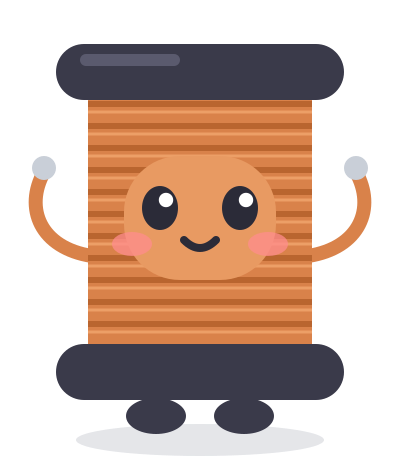
만나서 반가워!
구리선을 빙글빙글 감은 코일
자기장이 변하면 전류 발생!
N극과 S극을 가진 자석
움직일 때 진짜 힘이 나와!
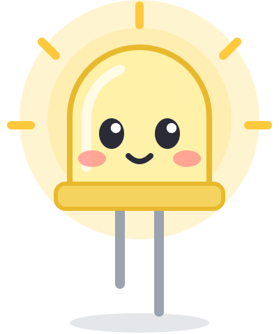
발광 다이오드(LED)
전류가 흐르면 반짝!
학습 목표
1
전자기 유도 현상을 이해할 수 있다.
2
간이 손발전기를 제작할 수 있다.
1차시
자석 + 코일 실험
손 발전 후레쉬 관찰
2차시
손발전기 만들기
아이디어
자이로드롭
생각 열기
킥보드를 탈 때만 빛나는 바퀴,
전기는 어디서 왔을까?
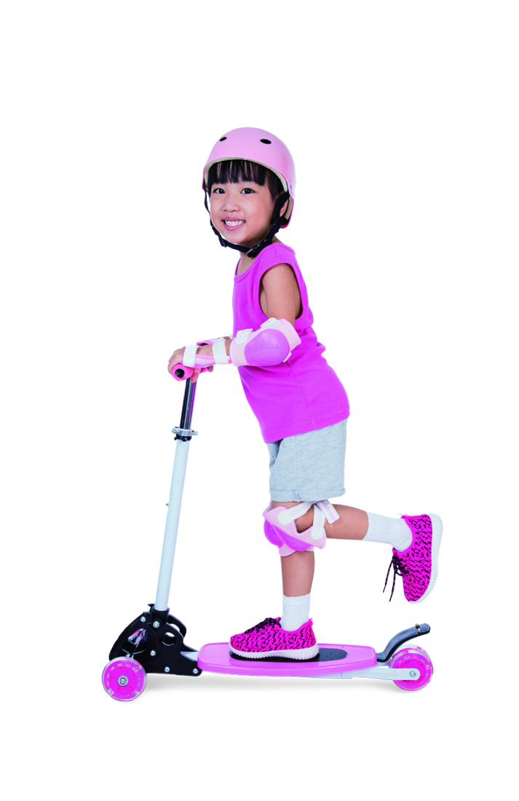
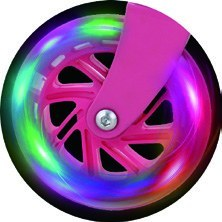
바퀴가 굴러가면 → ?
KEYWORD
버려지는 에너지를 모아 전기로 바꾸는 기술
움직임
진동
빛
열
harvest = 수확하다 · 오늘의 주인공은 움직임 → 전기!
탐구 1
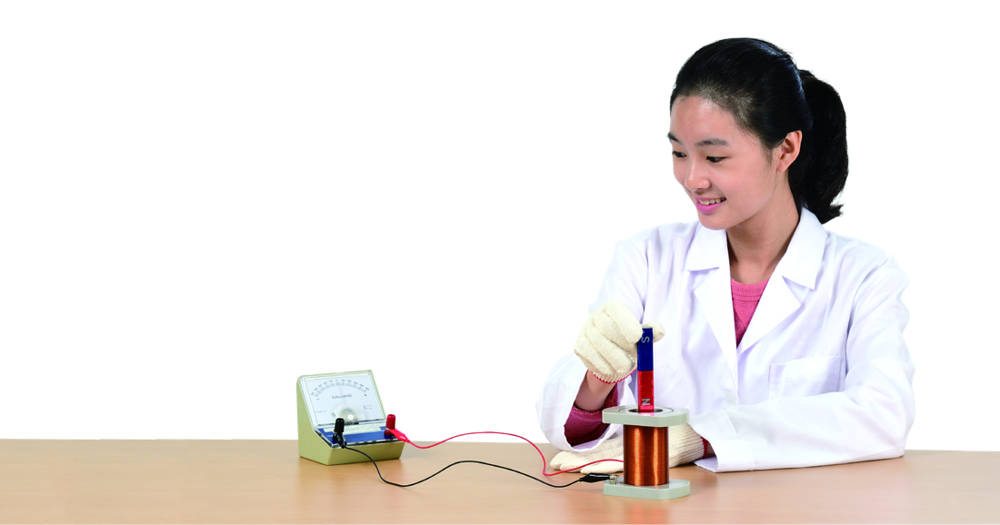
코일
검류계
막대자석
검류계: 아주 약한 전류도
바늘로 보여 주는 계기
탐구 1 · 기본 관찰
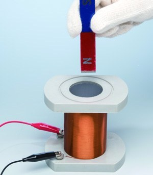
(가) 넣을 때
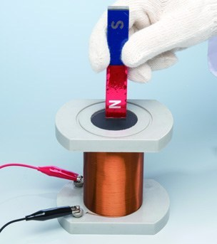
(나) 가만히 있을 때
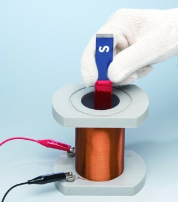
(다) 뺄 때
검류계 바늘이 어느 쪽으로 움직이는지 지켜보자!
관찰 미션 A
천천히 넣기
S
N
빠르게 넣기
S
N
바늘이 움직이는 각도는 어떻게 달라질까?
관찰 미션 B
N극을 넣을 때
S
N
S극을 넣을 때
N
S
바늘이 처음 움직이는 방향은?
뺄 때는 어떨까?
탐구 1 · 기록하기
| 자석의 움직임 | 바늘이 처음 움직인 방향 | 바늘 각도 |
|---|---|---|
| N극을 천천히 넣을 때 | 왼쪽 / 오른쪽 / 안 움직임 | 작게 / 크게 |
| N극을 빠르게 넣을 때 | 왼쪽 / 오른쪽 / 안 움직임 | 작게 / 크게 |
| N극을 뺄 때 | 왼쪽 / 오른쪽 / 안 움직임 | 작게 / 크게 |
| 자석을 가만히 둘 때 | 왼쪽 / 오른쪽 / 안 움직임 | 작게 / 크게 |
| S극을 넣을 때 | 왼쪽 / 오른쪽 / 안 움직임 | 작게 / 크게 |
| S극을 뺄 때 | 왼쪽 / 오른쪽 / 안 움직임 | 작게 / 크게 |
탐구 1 · 결과 정리
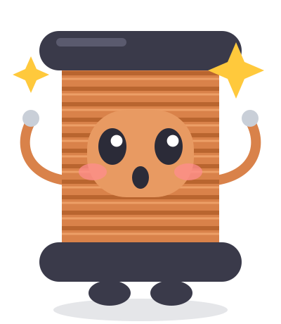
1
자석이 멈추면 바늘도 0
2
바늘 방향이 서로 반대
3
바늘이 더 크게 움직인다
4
바늘 방향이 반대로
핵심 개념
코일 속 자기장이 변할 때 → 코일에 전류가 흐르는 현상
이때 흐르는 전류 = 유도 전류
자기장이 빨리, 많이 변할수록 → 유도 전류가 세진다
1초 퀴즈
O
X
정답 X! 자기장이 변하지 않으면 유도 전류도 없어요
탐구 2
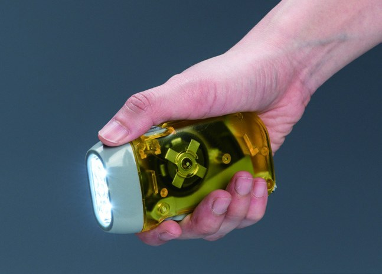
1
손잡이를 꾹꾹 누르면?
2
더 빠르게 누르면?
3
투명 창 속엔 무엇이?
탐구 2 · 속을 들여다보면
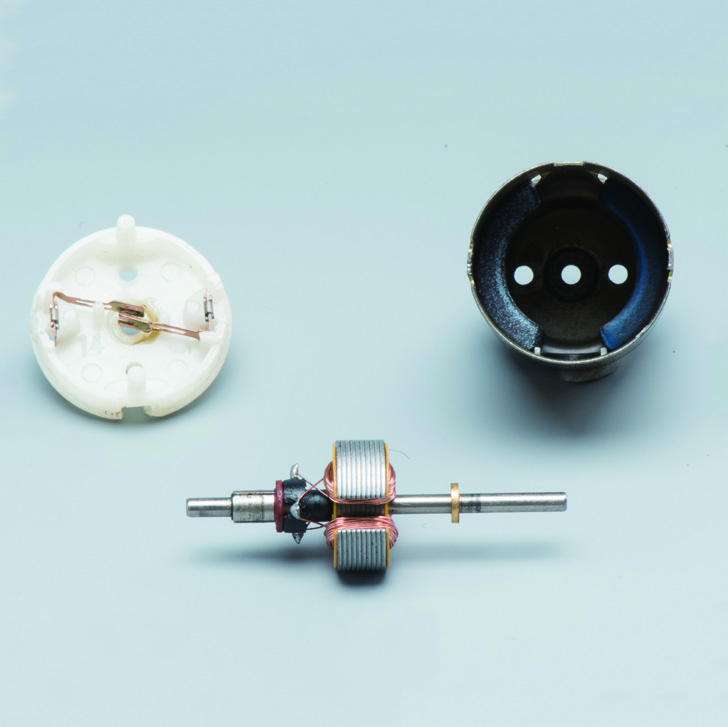
자석
코일
손으로 돌린다 · 누른다
자석과 코일이 서로 빙글빙글
코일 속 자기장이 변한다
유도 전류 → 불빛 반짝!
에너지 전환
운동 에너지
전기 에너지
빛 에너지
손의 움직임이 코일을 거쳐 빛이 되기까지!
1차시 정리
자기장이 변하면 → 전자기 유도
코일에 흐르는 전류 = 유도 전류
빠를수록 세게, 극 바꾸면 반대로
다음 시간 예고
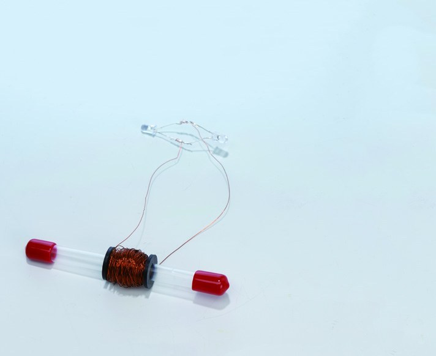
흔들면 켜지는
손발전기를 직접 만들어요!
2차시
흔들기만 해도 반짝!
워밍업
1
자석을 코일 속에
가만히 두면?
2
자석을 더 빠르게
움직이면?
3
자석의 극을
반대로 하면?
바늘 0, 전류 없음
유도 전류가 세진다
전류 방향이 반대
준비물
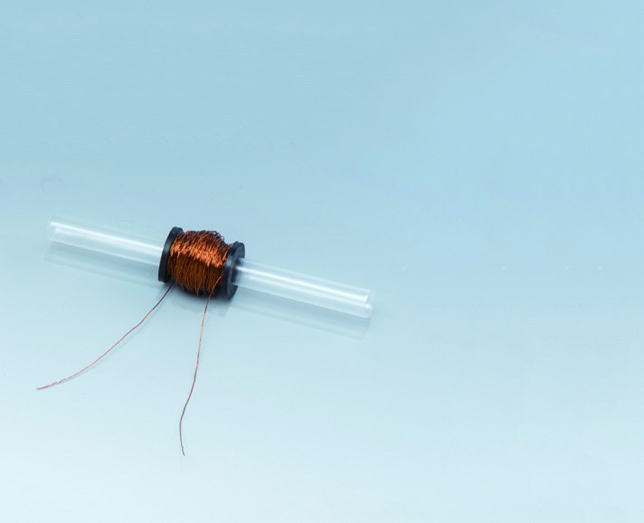
고무 캡마개" style="width:344px;height:300px;object-fit:cover;border-radius:20px">투명 관 +
고무 캡마개
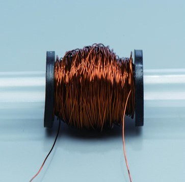
(약 400회)" style="width:344px;height:300px;object-fit:cover;border-radius:20px">에나멜선
(약 400회)
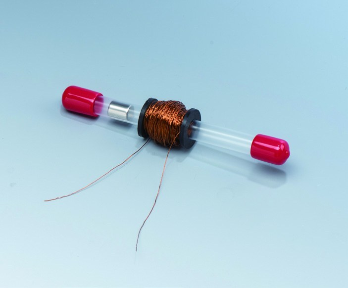
+ 마개" style="width:344px;height:300px;object-fit:cover;border-radius:20px">네오디뮴 자석
+ 마개
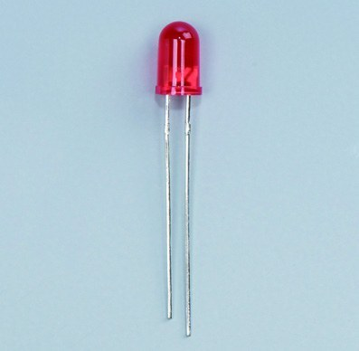
(LED)" style="width:344px;height:300px;object-fit:cover;border-radius:20px">발광 다이오드
(LED)
+ 사포
+ 면장갑
제작 순서
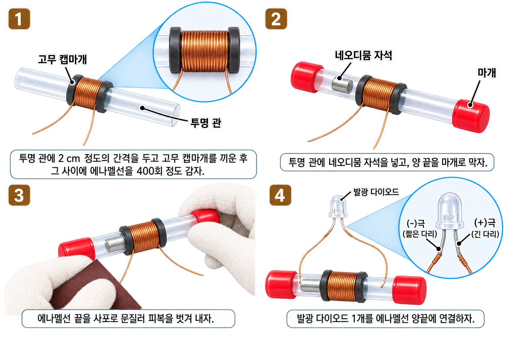
만들기
STEP 1
에나멜선을 400회 감기" style="width:756px;height:420px;object-fit:cover;border-radius:24px">2 cm 간격으로 캡마개 끼우고
에나멜선을 400회 감기
STEP 2
양 끝을 마개로 막기" style="width:756px;height:420px;object-fit:cover;border-radius:24px">네오디뮴 자석을 넣고
양 끝을 마개로 막기
만들기
STEP 3
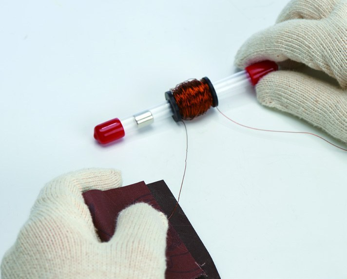
피복 벗기기" style="width:756px;height:420px;object-fit:cover;border-radius:24px">에나멜선 끝을 사포로 문질러
피복 벗기기
STEP 4
에나멜선 양 끝에 연결하기" style="width:756px;height:420px;object-fit:cover;border-radius:24px">발광 다이오드를
에나멜선 양 끝에 연결하기
안전 & 꿀팁
손가락 끼임 주의, 휴대폰·카드 멀리
흔들 때 자석이 튀어나오지 않게
남아 있으면 전류가 안 흘러요
감은 수가 많을수록 유리
관찰
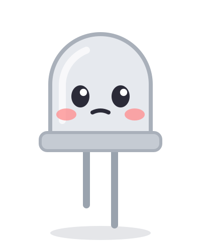
흔들지 않을 때
흔들 때
더 빠르게 흔들면 밝기는?
원리
1
관을
흔든다
2
자석이
코일을 통과
3
코일 속
자기장 변화
4
유도 전류
발생
5
LED
반짝!
운동 에너지
전기 에너지
빛 에너지
발전
자기장이 더 빨리 변해요
자기장 변화가 더 커져요
감은 수가 많을수록 전류↑
깜빡깜빡 켜지는 이유? 흔들 때마다 전류 방향이 바뀌기 때문!
생활 속 에너지 하베스팅
빛나는 킥보드 바퀴
손 발전 후레쉬
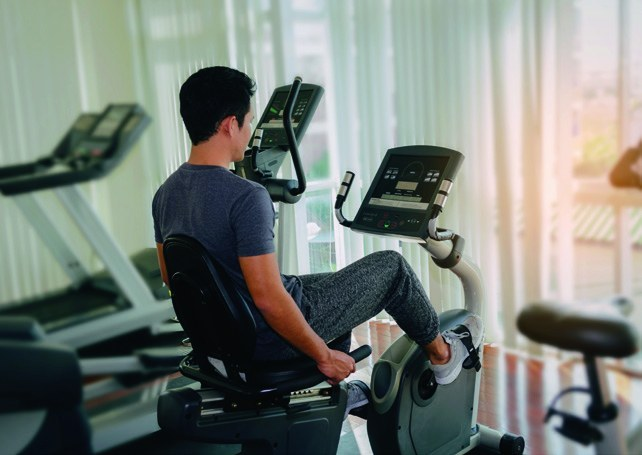
운동하면서 발전하는 자전거
자전거 바퀴 발전기
전기차 회생 제동
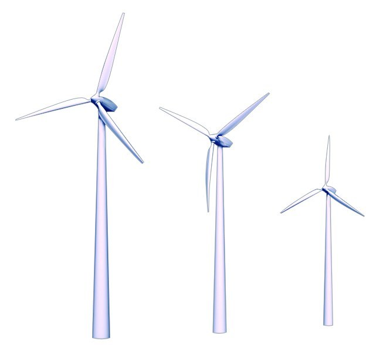
바람을 모으는 풍력 발전
아이디어 고안
1
버려지는 움직임 찾기
2
자석과 코일은 어디에?
3
만든 전기는 어디에 쓸까?
힌트: 이런 움직임은 어때?
계단 오르기
문 여닫기
그네
가방 흔들림
줄넘기
걷는 발걸음
파도
회전문
모둠 활동
8분 타이머
아이디어 이름
어떤 움직임을 모을까?
전기는 어디에 쓸까?
설계 그림 · 자석과 코일의 위치를 표시해요
놀이공원의 비밀
꼭대기에서 뚝! 떨어지다가
바닥 근처에서 부드럽게 감속
브레이크 패드? 아니면…?
금속판 (의자 쪽)
강한 자석 구간
자이로드롭의 비밀
① 금속판이 자석 사이를 빠르게 통과
② 금속판 속 자기장 변화 → 유도 전류
③ 유도 전류가 떨어지는 운동을 방해
④ 부드럽게 감속!
마찰 없음
전기 없이도 작동
빠를수록 강하게
영상으로 확인!
자석의 힘으로
멈추는 순간!
오늘의 핵심
코일 속 자기장이 변하면
전류가 흐르는 현상
전자기 유도로
코일에 흐르는 전류
버려지는 에너지를
모아 전기로!
전환기 퀴즈 대회 예상 문제
1
버려지거나 사용되지 않는 에너지를 모아 전력으로 재활용하는 기술은? 에너지 ○○○○
2
코일 주위에서 자석을 움직일 때, 코일 속 자기장이 변해 전류가 흐르는 현상은?
3
전자기 유도에 의해 코일에 흐르는 전류는?
하베스팅
전자기 유도
유도 전류
작은 움직임 하나도 에너지가 될 수 있어요